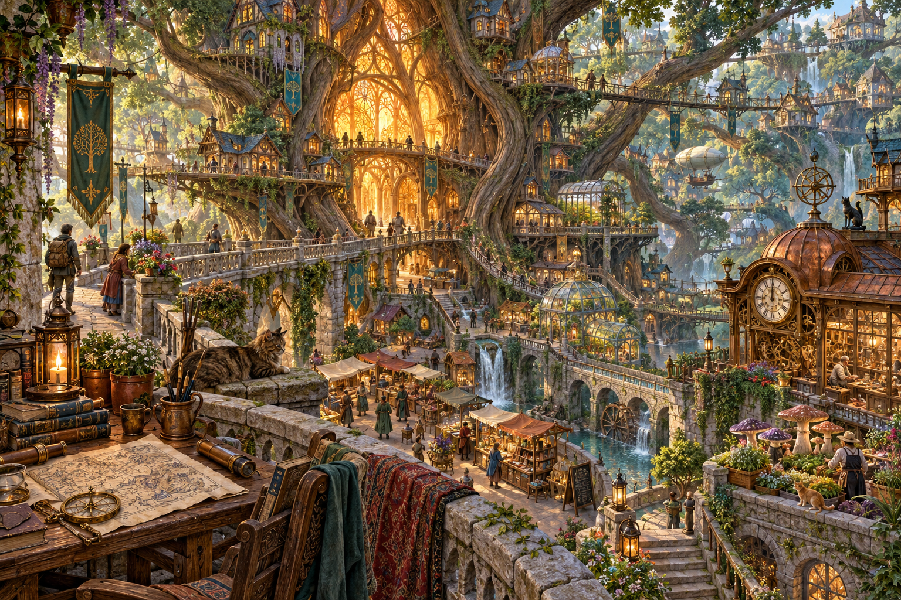
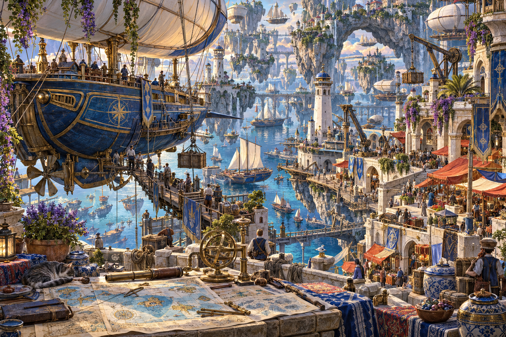

Dwa światy.
Tysiąc detali.
Ilustracje fantasy z myślą o przyjemności układania: wyraźne lokalne punkty, odmienne grupy kolorów i wiele małych historii.

Miasto, które rośnie.
Mosty łączą domy zbudowane wokół korzeni i gałęzi. Na różnych poziomach pojawiają się targ, szklarnie, pracownia zegarmistrza i woda spływająca przez dolną część miasta. Każdy narożnik ma osobny punkt orientacyjny: mapy, rośliny, tkaniny lub warsztat.

Port między wyspami.
Przystań sterowców, schodkowy rynek, wiszące mosty i ogrody tworzą chłodniejszą, otwartą przestrzeń. Rozpoznawalne żagle, ceramika, mosiężne instrumenty i czerwone zadaszenia ułatwiają odróżnianie fragmentów obrazu.
Kompozycja pod puzzle
Detale zajmują całą powierzchnię. Niebo i woda są podzielone architekturą, roślinnością oraz jednostkami pływającymi. Ciepły środek pierwszej sceny i chłodna panorama drugiej tworzą dwa różne kierunki.
Rzeczywiste pliki
Dwa oryginalne wyniki narzędzia imagegen, każdy 1536 × 1024 px. Zachowano natywne PNG bez późniejszego skalowania lub retuszu w Pythonie.
Pobierz oba obrazy i opis